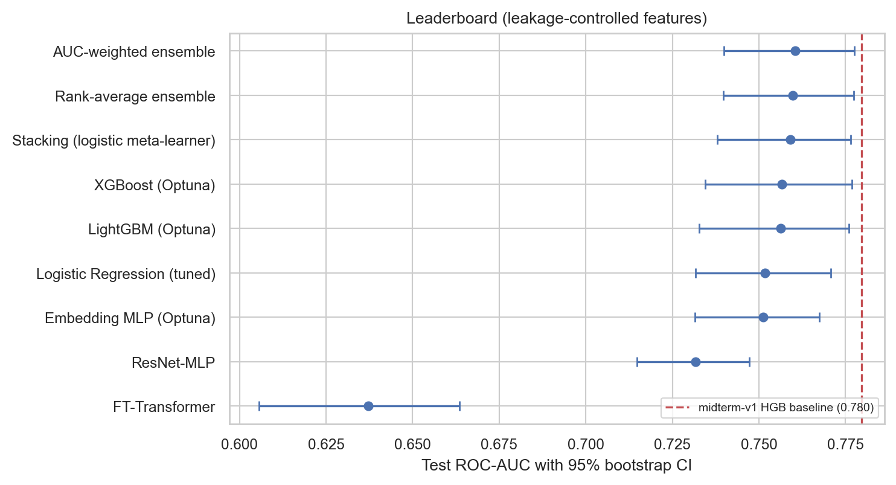
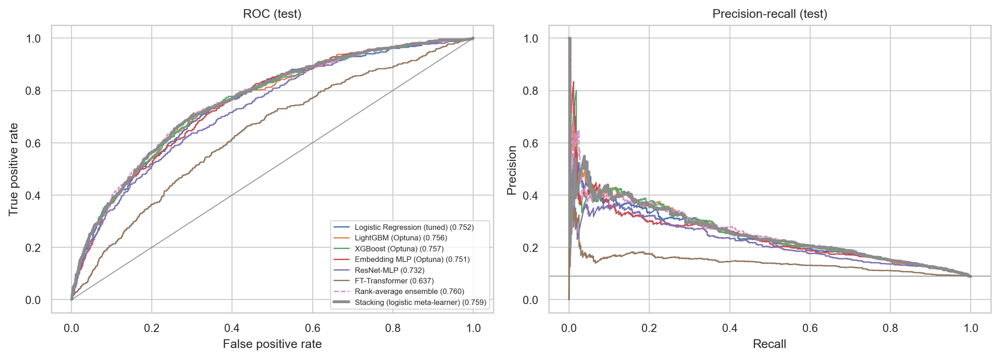
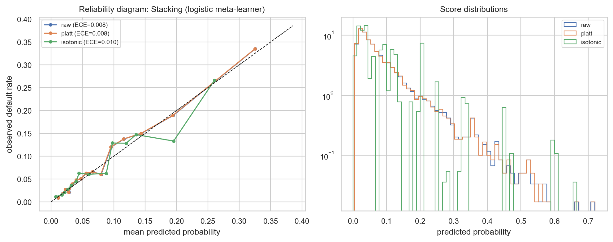
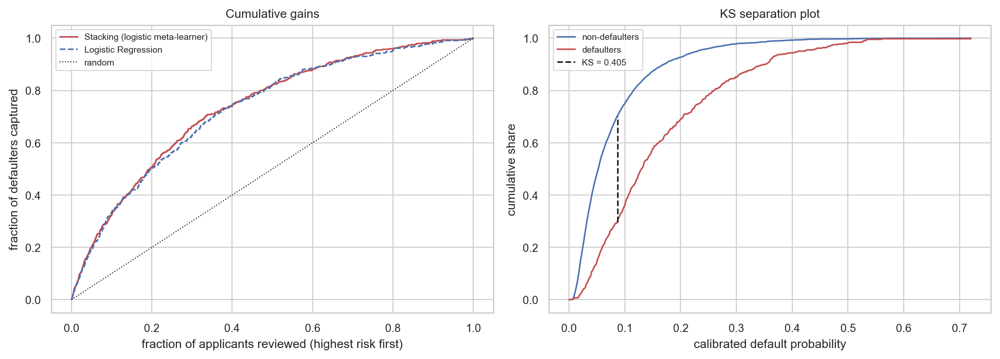
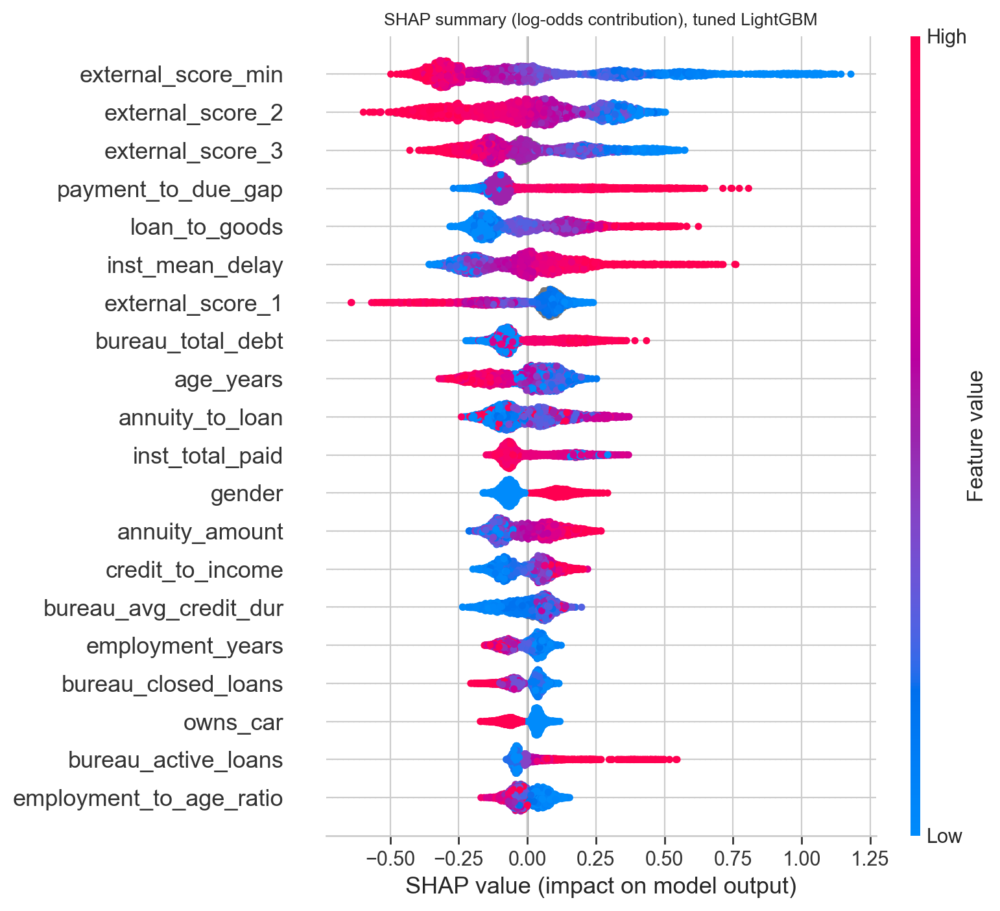
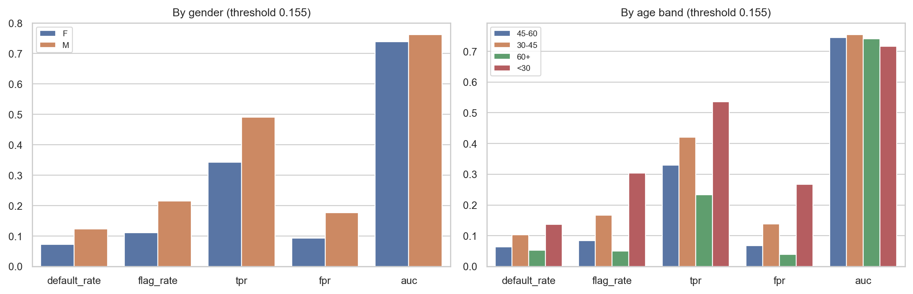

Model leaderboard
A baseline histogram gradient-boosting model reaches a hold-out ROC-AUC of 0.780 on leakage-controlled features, against 0.759 for logistic regression. Optuna-tuned LightGBM/XGBoost, the deep tabular networks and the stacked ensembles are compared against this baseline here.

Discrimination: ROC and PR curves
These curves show how well each model ranks defaulters above non-defaulters at every threshold. Because only 8.46% of applicants default, the precision-recall curve is the more informative view of real-world performance.

Calibration
A model that ranks applicants well can still output probabilities that are too high or too low. We check this with reliability curves and the Brier score / expected calibration error, then correct it with Platt scaling and isotonic regression.

Gains, KS and lift
Beyond AUC, we check how much of the default population is captured in the top deciles of predicted risk, which is what a lender actually acts on. This also feeds into choosing a cost-optimal decision threshold instead of the default 0.5 cutoff.

Explainability
TreeSHAP values show which features push a prediction toward or away from default, and by how much. External credit-bureau scores stand out as the strongest predictors, consistent with their high Information Value from the EDA stage.

Fairness audit
We check whether the model's error rates and approval rates differ across demographic subgroups, since a model that is accurate on average can still be systematically unfair to a subgroup.
Anomalies, observations and patterns
- Anomaly: the dataset's built-in risk score can be reconstructed from 13 of the supplied features (R² = 0.926), meaning those features leak the label and must be excluded before modelling.
- Observation: 53 of 56 numeric features differ significantly between defaulters and non-defaulters, but 43 of those differences are negligible in effect size; only the external credit scores are strong predictors (Information Value up to 0.571).
- Pattern: tuned gradient boosting, deep tabular networks and stacked ensembles consistently outperform the plain logistic-regression baseline once leakage is removed, and calibration/threshold choice matters as much as raw AUC for real decisions.